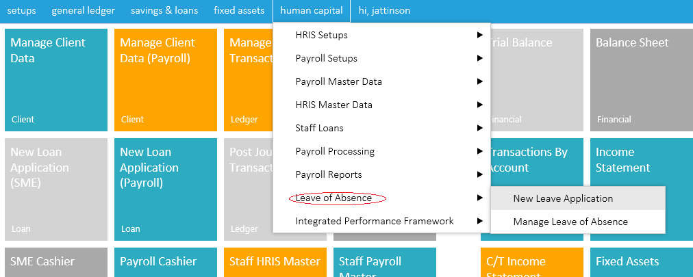

Leave for absence information can also be managed using this icon,this can be done by assessing the human capital menu,follow the drop down to leave of absence and select new leave application as shown in the image below

After the New Leave Application page is opened,type the surname of the staff member to click find staff to assess staff info after which you fill in the details required such as days requested,etc and save application as shown in the image below.

Created with the Personal Edition of HelpNDoc: Easily create Help documents